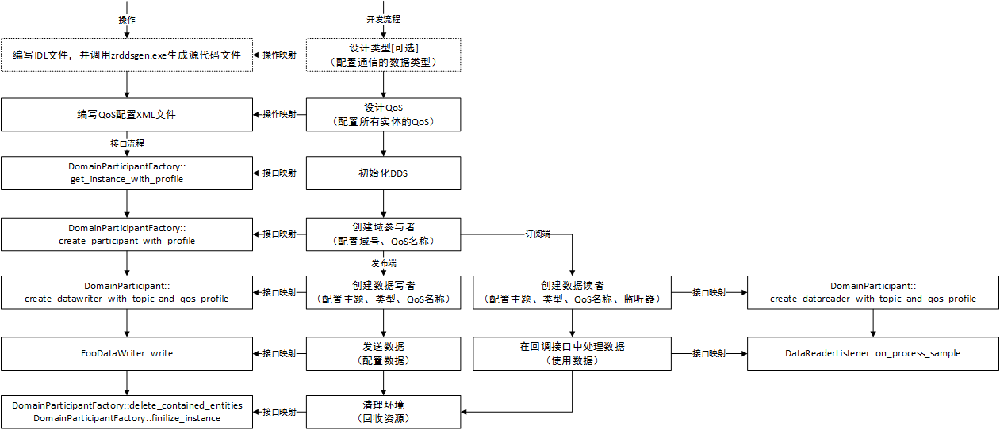
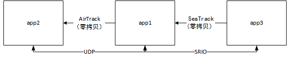

标准协议接口，即OMG DDS标准中所规定的接口。
图1中，中间列给出了ZRDDS应用程序开发流程的简单示意，最左列、最右列分别给出了各个步骤所映射的DDS标准协议接口。用户可以按照此流程进行开发，使用标准协议接口编写出最简单的数据收发程序。

注：图中订阅端采用的是监听器接收、处理到达数据。在实际的标准协议接口中，订阅端也可以采用条件-等待模型来接收、处理数据。
表1列出了开发流程中所涉及的主要接口。
此处仅列举较简单的一对一发布订阅的代码示例。如需要查看其他示例，参见示例。
ZRDDS在保留扩展性以及兼容性的基础上，在标准协议接口之上进行了扩展，以减轻开发难度以及代码复杂度。
相比于标准协议接口，扩展的接口提供以下功能：
扩展接口的开发流程及其操作映射如下图所示：

表2列出了流程中所涉及的主要接口。
| 接口名称 | 说明 |
|---|---|
| DDS::DomainParticipantFactory::get_instance_w_profile() | 初始化ZRDDS，并获取域参与者工厂。 |
| DDS::DomainParticipantFactory::create_participant_with_qos_profile() | 创建域参与者，并配置域、QoS、监听器。 |
| DDS::DomainParticipant::create_datawriter_with_topic_and_qos_profile() | 创建与指定主题名称、类型名称关联的数据写者，并设置QoS、监听器。 |
| DDS::DomainParticipant::create_datareader_with_topic_and_qos_profile() | 创建与指定主题名称、类型名称关联的数据读者，并设置QoS、监听器。 |
| DDS::ZRDDSDataWriter::write | 向DDS系统发布数据，由于DDS的强类型安全，应转化为特定类型的数据写者调用write函数，如零拷贝的数据写者，应调用 ZeroCopyBytesDataWriter::write 接口，对于非零拷贝（缓冲区类型）应调用 BytesDataWriter::write。 |
| DDS::SimpleDataReaderListener | 默认简单的数据到达监听器，用户继承该监听器并在 DDS::SimpleDataReaderListener< T, TSeq, TDataReader >::on_process_sample 中处理到达的样本。 |
| DDS::DomainParticipantFactory::delete_contained_entities() | 删除该程序创建的所有的实体。 |
| DDS::DomainParticipantFactory::finalize_instance() | 回收DDS中间件所有资源。 |
示例中模拟了三个应用程序，其交互逻辑图如下，app1与app2通过UDP网络交互AirTrack主题，app1与app3之间通过RIO交互SeaTrack主题，均使用零拷贝数据类型。

本小节介绍了相较于标准协议接口所扩展的内容。详见表3。
为进一步缩短应用程序开发周期，ZRDDS提供了更精简的发布订阅接口，即简化接口。简化接口具有如下特点：
简化接口虽然可以降低ZRDDS的上手难度，但是，我们仍然建议用户对实体及实体的QoS配置进行学习、调优，从而使软件适应不同的使用场景、资源使用等其他需求。
简化接口的开发流程及其操作映射如下图所示：

表4列出了流程中所涉及的主要接口。
| 接口名称 | 说明 |
|---|---|
| DDS::DDSIF::Init() | 初始化ZRDDS，并获取域参与者工厂。 |
| DDS::DDSIF::CreateDP() | 创建域参与者，并配置域、QoS、监听器。 |
| DDS::DDSIF::PubTopic() | 创建与指定主题名称、类型名称关联的数据写者，并设置QoS、监听器。 |
| DDS::DDSIF::UnPubTopic() | 取消发布，通过指定精确的数据写者指针。 |
| DDS::DDSIF::UnPubTopicWTopicName() | 取消发布，通过指定域以及主题名称。 |
| DDS::DDSIF::SubTopic() | 创建与指定主题名称、类型名称关联的数据读者，并设置QoS、监听器。 |
| DDS::DDSIF::UnSubTopic() | 取消订阅，通过指定精确的数据读者指针。 |
| DDS::DDSIF::UnSubTopicWTopicName() | 取消发布，通过指定域以及主题名称。 |
| DDS::ZRDDSDataWriter::write() | 向DDS系统发布数据，由于DDS的强类型安全，应转化为特定类型的数据写者调用write函数，如零拷贝的数据写者，应调用 ZeroCopyBytesDataWriter::write() 接口，对于非零拷贝（缓冲区类型）应调用 BytesDataWriter::write() 。 |
| DDS::SimpleDataReaderListener | 默认简单的数据到达监听器，用户继承该监听器并在 DDS::SimpleDataReaderListener< T, TSeq, TDataReader >::on_process_sample 中处理到达的样本。 |
| DDS::DDSIF::Finalize() | 回收DDS中间件所有资源。 |
以下为零拷贝相关的接口，关于零拷贝数据类型 DDS::ZeroCopyBytes( DDS_ZeroCopyBytes ) ：
| 接口名称 | 说明 |
|---|---|
| DDS::DDSIF::ZeroCopyBytesCreate | 创建零拷贝对象并分配空间 |
| DDS::DDSIF::ZeroCopyBytesDestroy | 回收零拷贝对象空间 |
| DDS::DDSIF::ZeroCopyBytesWrite | 向指定域号以及主题上发布零拷贝数据 |
以下为非零拷贝（缓冲区类型）接口，非零拷贝（缓冲区类型） DDS::Bytes( DDS_Bytes ) ：
| 接口名称 | 说明 |
|---|---|
| DDS::DDSIF::BytesWrapper | 将用户缓冲区包装成Bytes类型，用于发送。 |
| DDS::DDSIF::BytesWrite | 与零拷贝发送类似，但发送的数据为非零拷贝的内置数据类型Bytes即缓冲区类型。 |
示例中模拟了两组收发场景，其各自交互逻辑图如下，第一组使用非零拷贝数据类型，其中SimpleInterfaceBytesTypePub与SimpleInterfaceBytesTypeSub通过UDP网络交互AirTrack主题，第二组使用零拷贝数据类型，其中SimpleInterfaceZeroCopyPub与SimpleInterfaceZeroCopySub之间通过RIO交互SeaTrack主题。
完整代码、配置文件以及生成脚本参见安装目录的example/cpp/SimpleInterface，通过./MakeAll.sh命令生成例子程序， *将XML配置文件放到程序的运行目录*，再启动每组场景下的订阅程序与发送程序。如：启动第一组场景时，需依次启动SimpleInterfaceBytesTypeSub，SimpleInterfaceBytesTypePub，在此收发场景下可以看到SimpleInterfaceBytesTypeSub有周期性的输出；启动第二组场景时，需依次启动SimpleInterfaceZeroCopySub，SimpleInterfaceZeroCopyPub，在此场景下可以看到SimpleInterfaceZeroCopySub有周期性输出。


配置文件中典型配置及其使用场景如下表：
表5. 配置文件中典型配置及其使用场景
| 配置 | 含义 | 说明 |
|---|---|---|
| rio_config | SRIO配置 | 当应用需SRIO通信时，在 DDS::DDSIF::Init() 时需传入该配置 |
| non_rio | 默认DDS配置 | 当应用无需SRIO通信时，在 DDS::DDSIF::Init() 时传入该配置 |
| rio_dp | 配置了SRIO通信地址的域参与者配置 | 在使用 DDS::DDSIF::CreateDP() 时传入以创建使用SRIO通信的域参与者 |
| udp_dp | 配置了以默认地址的UDP通信方式的域参与者配置 | 在使用 DDS::DDSIF::CreateDP() 时传入以创建使用UDP通信的域参与者 |
| tcp_dp | 配置了以默认地址的TCP通信方式的域参与者配置 | 在使用 DDS::DDSIF::CreateDP() 时传入以创建使用TCP通信的域参与者 |
| non_zerocopy_reliable | 非零拷贝的可靠通信配置 | 在使用 DDS::DDSIF::PubTopic() / DDS::DDSIF::SubTopic() 时传入以创建非零拷贝的可靠发布者或者订阅者 |
| non_zerocopy_best_effort | 非零拷贝的尽力而为通信配置 | 在使用 DDS::DDSIF::SubTopic() 时传入以创建非零拷贝的尽力而为的订阅者（发布者可以是可靠的） |
| zerocopy | 零拷贝的QoS配置 | 在使用 DDS::DDSIF::PubTopic() / DDS::DDSIF::SubTopic() 时传入以创建零拷贝的发布者或者订阅者 |